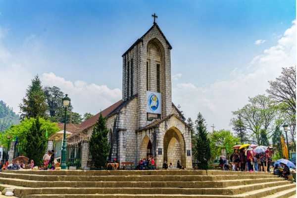
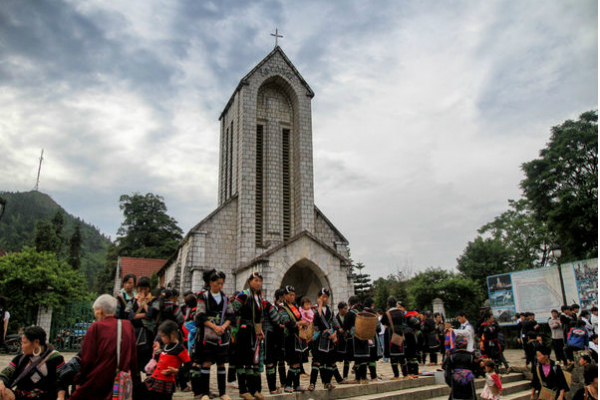
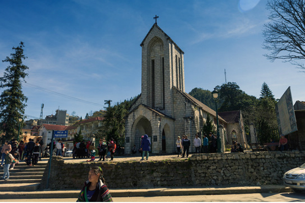

Sa Pa, 沙壩縣老街 越南
沙壩教堂小介紹
位於越南最高城鎮：沙壩鎮市中心的石教堂是越南最高海拔的教堂，因海拔高緣故，教堂常被雲霧包圍，顯得其莊嚴神秘。石教堂是沙壩居民的信仰中心，許多居民會在傍晚時到教堂望彌撒，使用的語言不是京族話，而是當地方言。除此之外，教堂前面的廣場常舉辦各類活動，也是當地人的聚會場所。
建議交通
沒有從河內直達沙壩的汽車，需要到北河或老街轉車。老街距離河內340公里，每天有兩列火車開往河內，車費15美元，需要10-12小時。老街火車站有開往河內的長途汽車，車費5,3000盾，需要10小時。到了老街後，每天有數班往返於老街口岸和沙壩的小型長途班車，車費2,5000越南盾，1.5小時。